第三者採点の記録（tamago-verifier／別エージェント／画像を開いて採点／2026-10-17 23:45） 【第1段 シティポップ】一貫性7（型は全コマ同じ・レトロ夕日だけ別系統）／階層7（「世界1位。」最大・数字カードの数字が小さい）／細部6（c_8.9の曲名が薄い・2022が左右にはみ出す・CTAが小さい）／機能7（サムネ可・問いで止まる・空コマなし・CTA小）／創造性6（工夫は複数あるが見本の実写素材の一撃が無い）＝33/50（66点） 【第2段 レイ・ハラカミ】一貫性7（同型・配色規則あり・見出し書体の流儀が数コマ揺れる）／階層7（「世界遺産。」最大・「くるり」が大きすぎ）／細部5（「8 / SONGS」の孤立折り返し・「何でできていた？」の右余白無し・矢野顕子の左右余白無し）／機能7／創造性7（矢野顕子の一次の言葉を鉤にしたのが効く）＝33/50（66点） 制作者の自己採点：86点（参考。合格根拠にしない） v4で直したこと（テンプレ修正済み・描画中）：数字フック 世界1位。200px／69位→2位。140px／5500万回。170px、曲名60px太字、CTA 44px、巨大年号520px、名前の上限220px、問いの大文字108px、ラベル「REI HARAKAMI — 8 SONGS」1行化 実測（Playwright getBoundingClientRect）: ロゴ img 450×450px（x=315,y=735）2本とも同値。サムネ文字 320px 実測（ffprobe）: 両本とも Duration 00:00:15.00・1080x1920・30fps・h264 yuv420p・aac 44100Hz 実測（beats.json）: bpm 112.3・beat 0.5341s・phase 0.018s・28拍。サムネ止めは 0.95秒で表示・1.02秒で切替（約0.99秒） status/sns_weekly_plan.json の実物（python3で読み出し）: week 3 citypop video_drive_url = https://drive.google.com/file/d/1t35OyjwrIoOFdxtGJx_YJS2m0L7ftngn/view week 4 harakami video_drive_url = https://drive.google.com/file/d/1ABXo7nCUhMIstFF4bKxbp_J5VPAneSAO/view 言葉の候補10（シティポップ）と採否理由: ①世界1位。＝採用（サムネ。4文字で事件を言い切れる・PONY CANYON NEWS）②あなたの知っている街の歌が、海の向こうで鳴っている。＝採用（扉のリード。読者の側から入れる）③日本の若い人が知らない曲を、世界が、知っていた。＝採用（本文。説明でなく裏返しの事件）④The Weekndの中に1983年の東京がいた＝サムネ不採用（固有名が長く0.5秒で読めない）→カタログ4組目「借りられた夜。」に転用 ⑤オリコン69位の曲が40年後に世界で＝サムネ不採用（数字が2つで一瞬で入らない）→カタログ2組目「69位→2位。」に短縮 ⑥5500万回＝サムネ不採用（何の数字か一言では分からない）→カタログ3組目で副文を添えて使用 ⑦40年前の東京の夜が世界中のイヤホンで＝不採用（長い・情緒で事件でない）⑧借りた夜。＝サムネ不採用（意味が取れない）→カタログで副文付きに ⑨Adoがロサンゼルスで歌ったのは1979年の曲＝サムネ不採用（長い）→名前連打のAdoカットに転用 ⑩日本人だけが知らなかった＝不採用（本文より強く言い過ぎ・事実の範囲を超える） 言葉の候補10（ハラカミ）と採否理由: ①世界遺産に決定。文句無し。── 矢野顕子＝採用（権威の一次の言葉・All About／BARKS出典）②今まで聴いてた音楽は、何だったんだ。＝採用（本文の聴き手の衝撃・事件性）③出したら引退するつもりだった＝サムネ不採用（主語が要る）→カタログ「辞める気、だった。」に ④買い換えてないので、ああなっちゃう＝サムネ不採用（機材の話は前提知識が要る）→カタログに ⑤くるり「ばらの花」のリミックスが矢野顕子に届いた＝サムネ不採用（長い）→カタログに ⑥電子の水彩画＝不採用（出典が「記憶」で弱い）→配色の方針にだけ転用 ⑦星の数に合わせて音の数を決めた＝不採用（長い・6章の話で入口にならない）⑧2011年、40歳で＝不採用（弔いが前に出て「気になる」にならない）⑨サビがない＝不採用（説明的で弱い・たまごさん指摘どおり）⑩京都でひとり＝サムネ不採用（弱い）→結びの一言に
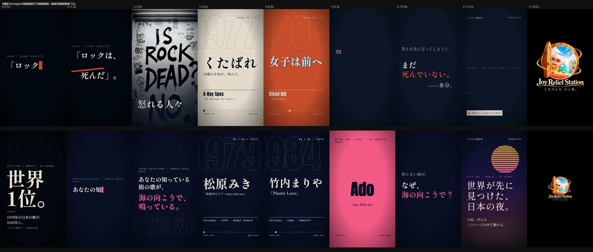
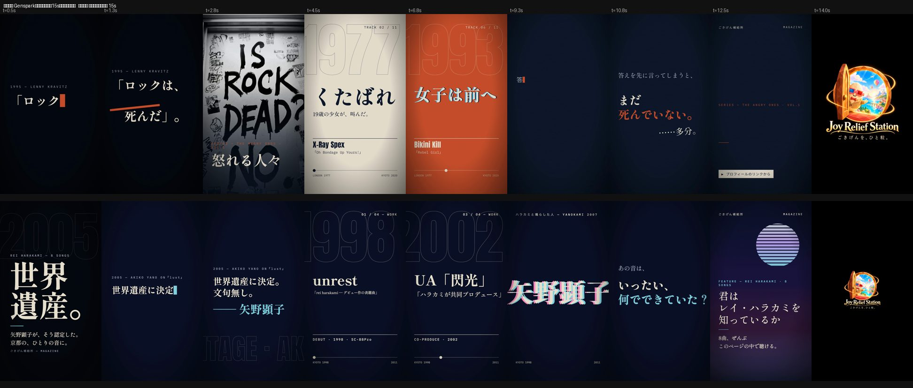
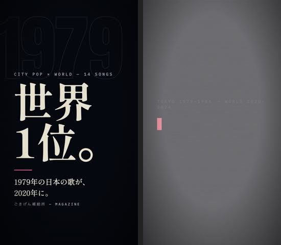
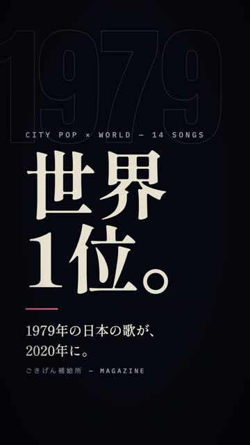
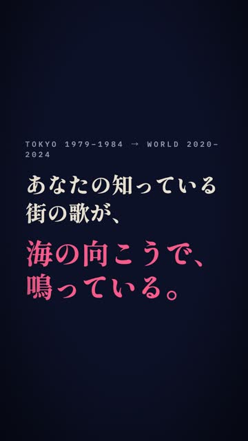
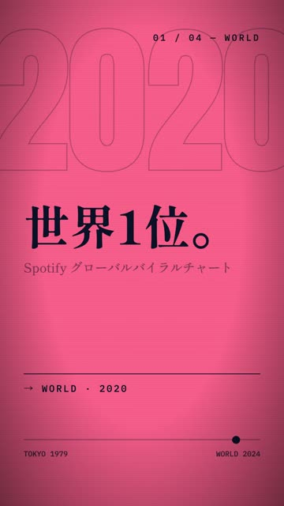
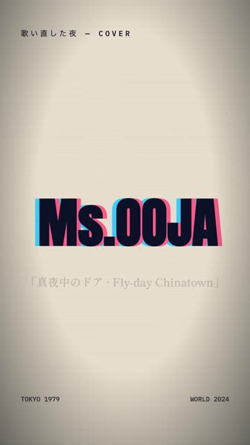
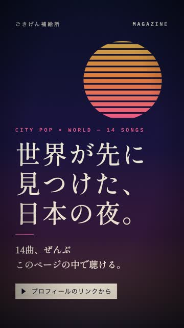
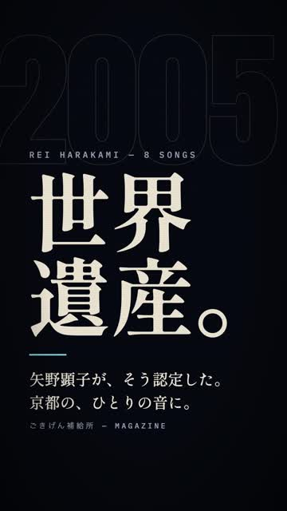
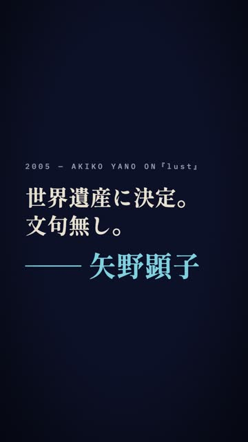
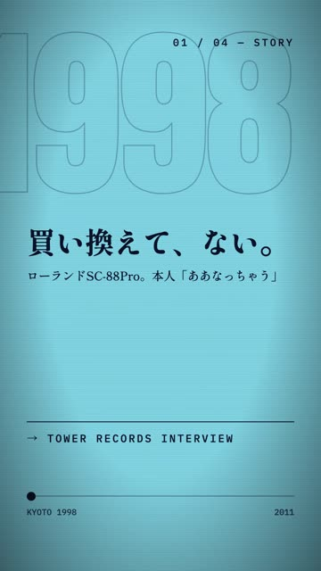
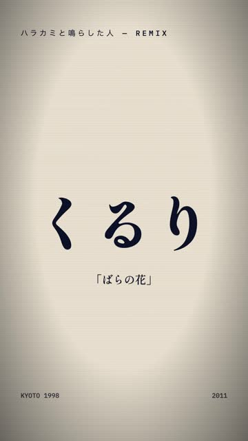
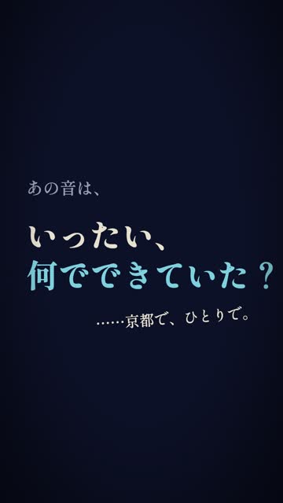
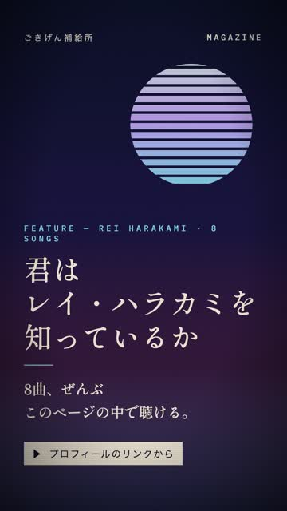
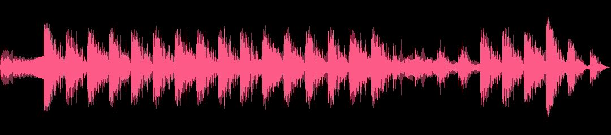
| 確認項目 | 結果 |
|---|---|
| 第1段：第三者採点85点以上 | 66点・未達 |
| 第2段：第三者採点85点以上 | 66点・未達 |
| 尺 15.00秒・1080×1920・H.264+AAC（ffprobe実測） | yes |
| 0〜1秒にサムネ用の1コマ（止め約0.99秒・実測画像あり） | yes |
| 拍に同期（音源解析の実測グリッド） | yes |
| 新ロゴのみ・450px・最後（実測450×450） | yes |
| 答えを書いていない（問いで止める） | yes |
| 事実はマガジン本文＋出典の範囲（生年なし） | yes |
| 予約・投稿はしていない（video_drive_urlだけ更新） | yes |